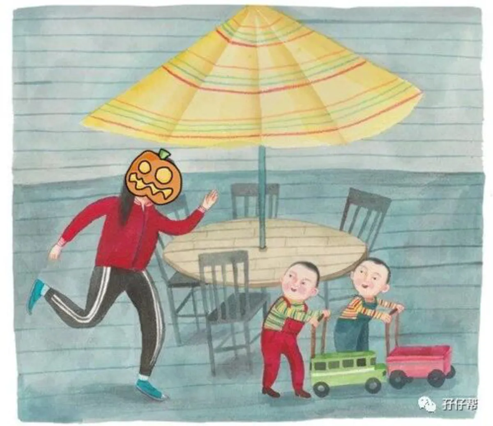
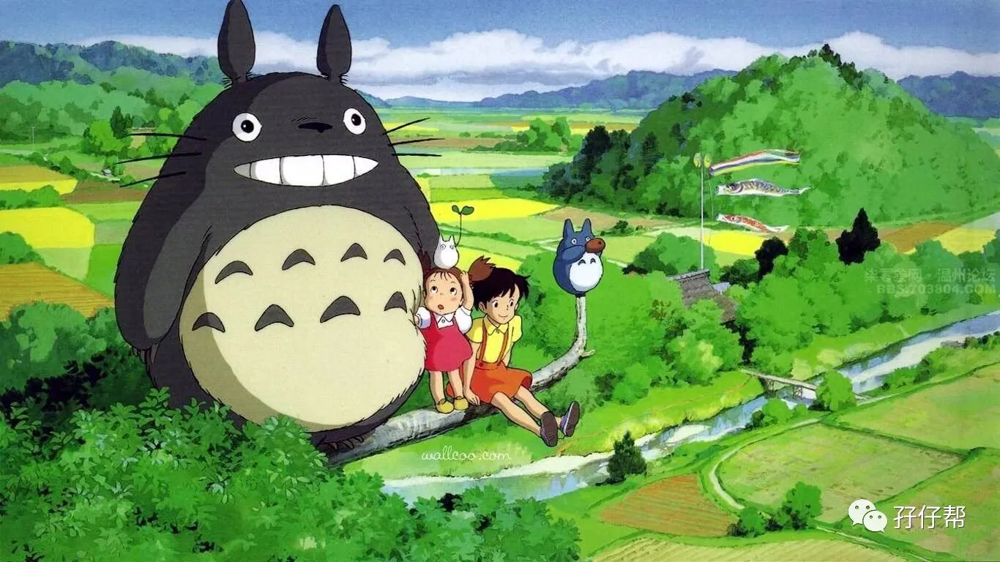
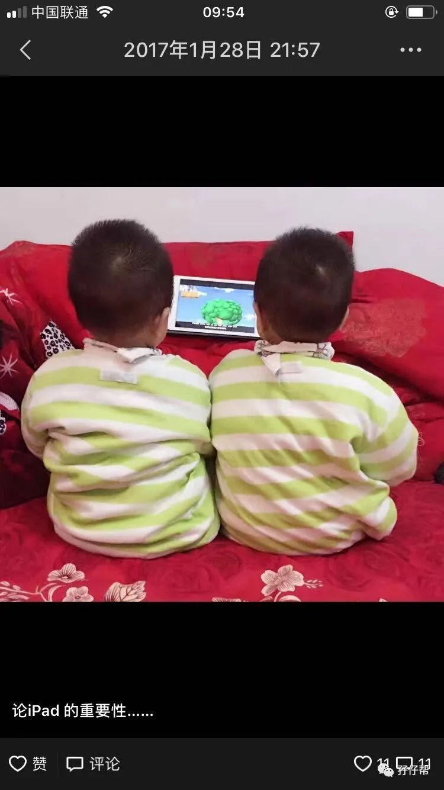
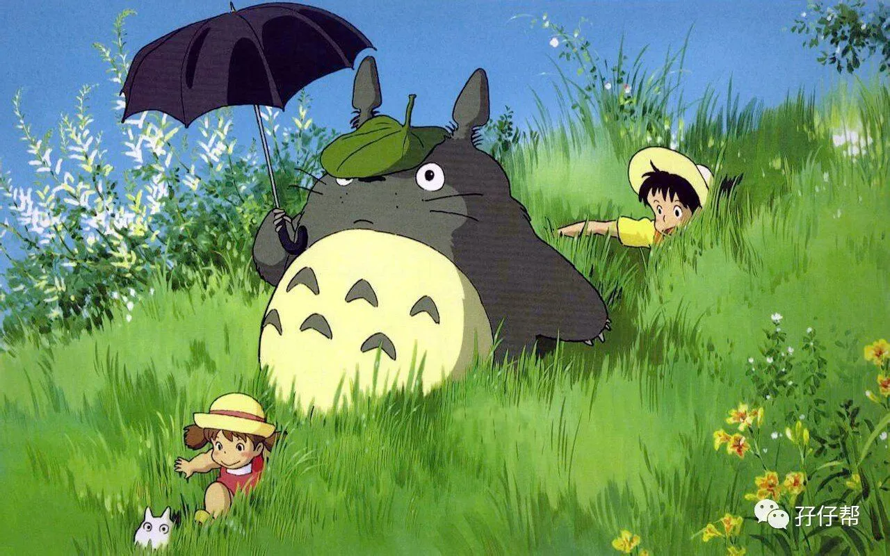
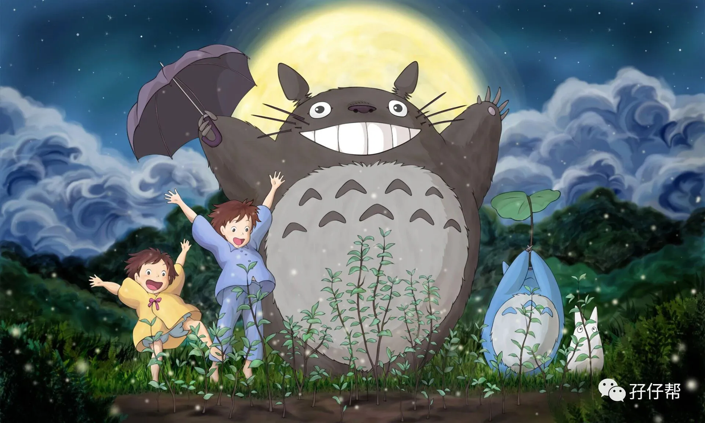
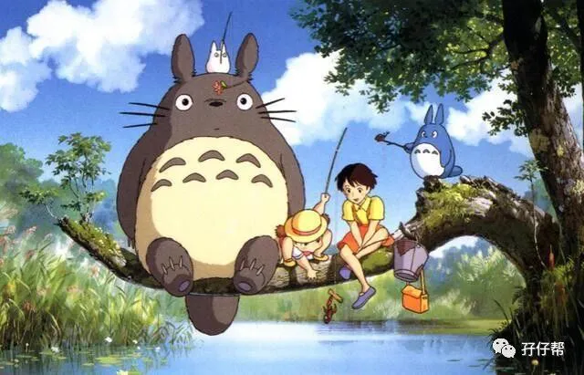

文|圆圈妈
图|来自网络
正 · 文 · 来 · 啦 ·
当妈妈们在群里七嘴八舌地讨论双12最值得剁手哪些育儿神器时，我脑海里只有一个选项：ipad！
注意，这篇不是苹果广告哈！今天的推文是想要传授一个带养双胞胎的秘诀，一个与世界卫生组织背道而驰的育儿秘诀！
2019年4月24日，世界卫生组织发布了有关幼儿接触电子屏幕时间的建议报告。
报告建议，2岁以下幼儿不要接触任何电子屏幕，2－5岁儿童每天接触电子屏幕的时间不能超过一小时。
我认为，参与研究并得出结论那些人，一定是未婚少女，就算是已婚，必定未育！就算已育，也不是双胞胎！
电子产品，以ipad为例，它在我养育双胞胎的头三年乃至现在的重要性无法估量，重要到什么地步呢？
家宁可一日无队友，
也不能让iPad离开半步！
【01】
ipad，阿拉丁的神灯
圆圈2岁时就知道按我的手机密码，拿着ipad，能识别APP 图标，并打开，选择浏览记录，根据经验选择自己喜欢看的动画片…
当然，这没啥好炫耀的！
我想说的是， 圆圈2岁前，我们使用ipad的频率很高，这都是他们从娃娃期开始练出来的！
俩娃同时要喝奶，同时要抱，同时要拉屎拉尿…IPAD！
打预防针，抽血，喂药…抵死不从时，IPAD！
不肯起床，不肯洗漱，不肯穿衣…需要点动力时，IPAD！
行车途中，哥俩无聊寂寞空虚+冷，IPAD！
外出就餐等上菜，碗筷被敲敲打打，各种威逼利诱不奏效时，IPAD！
我真的累到不想动一根手指头，没力气抬一下眼皮子，龙肉送我嘴边没兴趣张嘴，只想默默无闻地打个盹时，IPAD！
于我而言，iPad就是盏阿拉丁的神灯，关键时刻缓解我的燃眉之急！
🔼摄于2017年春节，在天寒地冻的圆圈爸老家过年🔼
每当圆圈异常哭闹，而我又分身无术时，我会用仅存的一口仙气打开iPad，给他们看一集SSS，每次限时5分钟，再大一点后，延长到10分钟，20分钟，30分钟（封顶）
这是多么来之不易的30分钟。
上大号终于不用分批…
上小号也能一气呵成...
洗澡不用洗完上半身就被逼出来倒屎倒尿...
吃饭终于不用狼吞虎咽，
运气好点还能吃上一口热饭，
终于有时间坐下来刷下朋友圈，报平安…
有IPAD在，
我才能像个正常人一样，
活着！
于圆圈而言，也有好的一面，他们确实从一些电视节目中受益不少。
粉红猪看多了，他们特别讲礼貌，逢人就打招呼，
帮帮龙看多了，安全意识特别强，会提醒我关煤气，
瑞奇宝宝看多了，知道分享玩具，不会老油条，
道奇看多了，知道如何与同伴相处，不会主动攻击其他小朋友，
米奇妙妙屋看多了，懂得很多生活常识，知道哪些物品可以用来做什么，
...
好多我们成人鲜少接触过的词语，居然被他们脱口而出，特别是现在他们到了话痨的年纪，哥俩天天出口成章，经常你问我答，听起来还头头头是道，有理有据。
妥妥的词汇王！两枚！
这些喜而乐见的成长，
iPad，功不可没！
【02】
iPad，不是洪水猛兽
分享一段iPad与我们亲子游的经历！
2018年2月，圆圈2岁半，我们的张家界之旅，这是我们一家四口首次挑战跨省游，从温暖如春的深圳来到了寒风刺骨，遍地积雪的张家界！
行李多，天气冷，崽儿们很闹，给我们的出行增加了不少难度。
在一家早餐店吃早餐，我们照例给圆圈拿出iPad！让他们一边看一边吃。
此举惹来隔壁桌两胖男人的非议，他们讲粤语肆无忌惮地对我们给孩子一边吃一边喂一边看电视的行为指指点点。
被两大男人这样批判我的育儿方式，心里很不爽，真希望自己听不懂粤语，暂时性失聪！
他们根本不知道，就在圆圈看iPad的前十分钟发生了什么事情。
我们费了九牛二虎之力才把他们拖出了被窝，穿好衣服，走出了酒店，
找餐位时他们到处乱窜，差点打翻了放在店门口的开水壶，
在等面条端上来的时候，差点撞到了桌角，
就在准备进店门口的时候，还摔了个大跟头。
一部iPad和动画片的简单画面就可以让他们彻底安静下来坐在位置上，而我们也终于能松口气，在人生地不熟的环境下，放心吃顿早餐！
多么善解人意，温柔体贴的iPad啊！怎么就谈iPad色变了呢？
在我没有当妈妈之前，经常看到有家长给娃看iPad，自己在看手机，我也跟那两位胖男人一样，心里嗤之以鼻，当时我还和队友发誓，以后我们坚决不能这样做。
实际呢？
当妈后，面对两个四角吞金兽，倘若没有iPad在，一直24小时随叫随到，高强度高警戒地围着他们不眠不休，我确定我做不到！
每次累到虚脱，给他们看iPad，争取到一点片刻宁静时，我就深刻体会到那位给娃看iPad的家长当时的心情！
给孩子看一会儿iPad怎么了？
当妈的只是想静静了！有错吗？
如果真的要分出对错，那错的是，让孩子们毫无节制，不加选择地看电视这种行为！
【03】
iPad，如何为双胞胎家庭所用
几乎没有哪个孩子不喜欢看动画片。
圆圈喜欢看动画片，但不沉迷！他们的兴趣爱好有很多，看动画片只是其中之一，而且他们有伴一起玩，看书，画画，拼图，搭乐高…
只是偶尔玩具玩腻了，才会嚷嚷着想看电视，
有时候，即便他们不嚷嚷着看电视，我也会主动打开投影仪给他们看！
反正我不给他们看，他们也会从其他渠道看到，甚至接触到一些儿童不宜的画面，倒不如满足他们的好奇心，适当看！选择性地看！
须知道，你能控制家里无动画片干扰，但不能左右外界随处可见电视机，电脑，手机这样的大环境。
与其一刀切，还不如教会孩子们如何与动画片和谐相处，此处分享我的经验。
ℹ控制时间
约定一个你们娘仨觉得合适的看电视时间，然后，到了规定时间就关掉，决不食言！
看电视之前，我会先跟圆圈商量好，这次看多少集，看多久，并调好闹钟，设定倒计时，只要闹钟响了，就必须关掉！
刚开始，他们会耍赖，关掉后会大哭，后来，慢慢接受这个游戏规则，再到后来，只要闹钟响起，就主动关上电视，不需要我提醒！
非常难得的自律！
ℹ内容要亲自过目
现在很多电视节目，虽说是适合少儿，但很多内容未必适宜而且很粗制滥造，包括一些音频也是，这就需要家长亲自把关！
我不赞同圆圈看光头强和喜羊羊，还好，他们也不是很喜欢看。
此处分享圆圈常看的动画片：《嗨！道奇》，《米奇妙妙屋》，《瑞奇宝宝》，《巴布工程师》，《朵拉爱冒险》，《托马斯和他的朋友们》，《雨果带你看世界》
ℹ跟孩子们一起看
为避免一些漏网之鱼，除了过滤掉一些儿童不宜的内容，家长应尽可能陪同孩子一起看（此处需要你牺牲下，扮演一个爱看动画片的老母亲和老父亲），就跟绘本亲子共读一样，这是你们娘三，爷三的亲子时光。
我很喜欢跟圆圈窝在沙发上一起看《瑞奇宝宝》，为的是跟他们有共同话题，他们看完后会跟我分享观后感，说文文乱发脾气，不可以这样做，跳跳很有礼貌，是个好孩子。
当他们做错事情，欠收拾时，我还可以拿瑞奇宝宝做切入口，比我简单粗暴的说教强多了！
【04】
陪伴和关怀更重要
iPad现在比较少用了，一般外出才会携带，在家则是用投影仪给他们播放动画片，每次看30分钟左右。
除了是完成老师布置的安全知识微课，也有我筛选过的，如大自然探险、科普专题、科幻题材等知识性电视作品。
我如此放肆地给孩子们看电视，遭到报应了吗？他们上瘾了吗？
目前看，并没有！
若是你的双胞胎是个电视迷，也许你该检讨下了，你是不是经常在他们找你撒娇求抱求安慰的时候，总是简单粗暴地来一句 “忙着呢，你们俩一边玩去！”
双胞胎孩子们能一起玩，但不代表他们不需要大人的陪伴，如果孩子们能在爸爸妈妈身上感受到重视和快乐，谁愿意抱着冷冰冰的电视机呢？
有时间就带上孩子们多去户外走走吧！
去郊外踏青，去公园踢球，去绿道骑车，一起去菜市场买菜，一起准备晚餐，一起做家务…
陪伴的时间多了，孩子们就心满意足了，对电视里那些单向输出，缺乏互动的内容自然就没有多大兴趣了！
一句话，ipad也好，手机电视也罢，只要适度地看，恰当地看，便能为我所用，轻松育儿。
-END-
今日互动话题
#你给双胞胎孩子们看iPad了吗？#
评论区聊一聊呗！
一关注孖仔帮一





